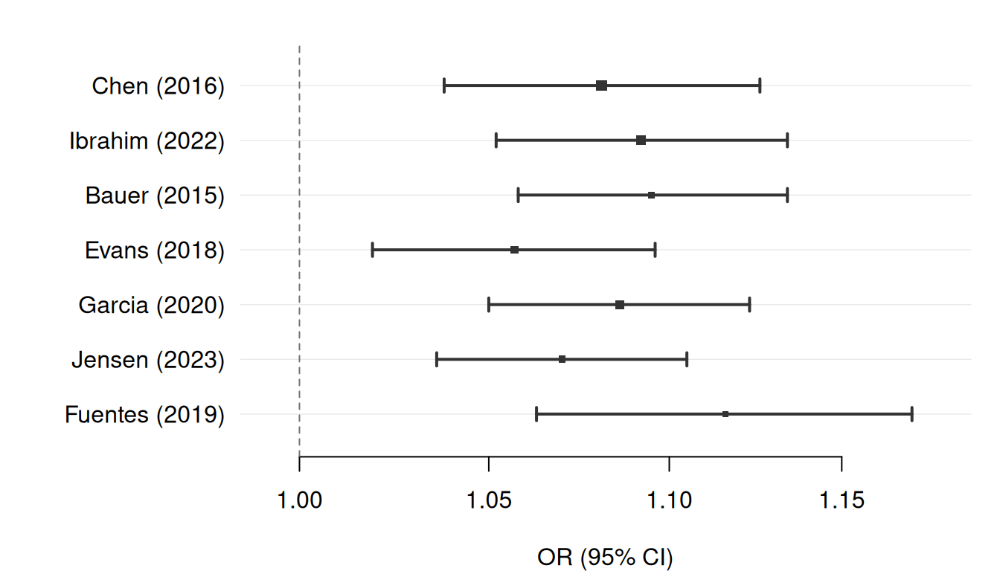
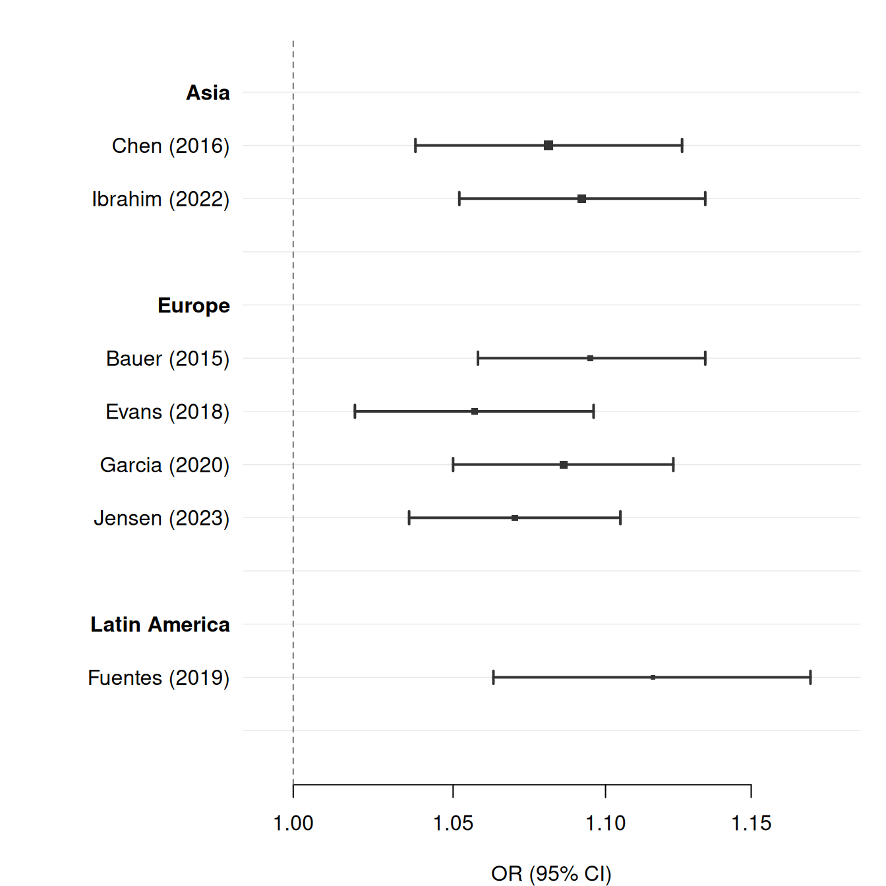
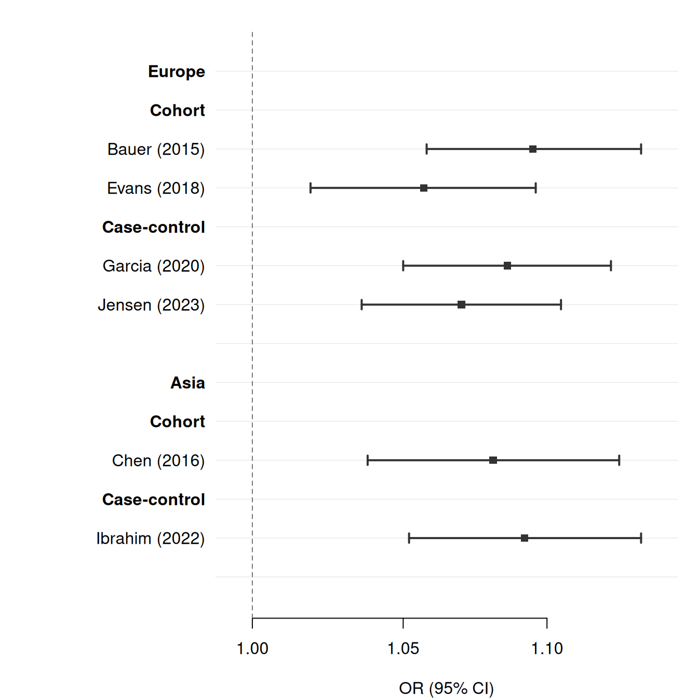
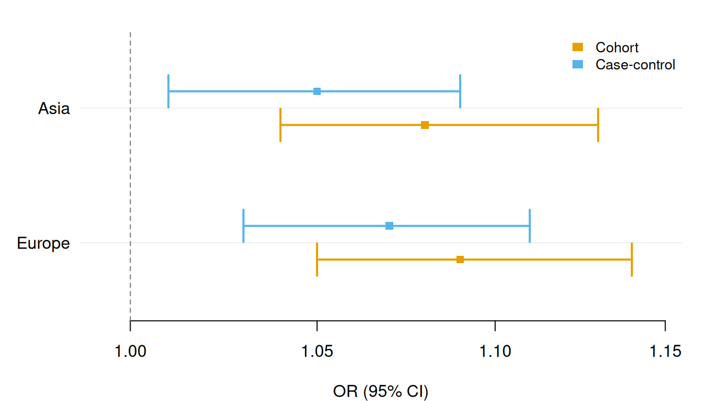
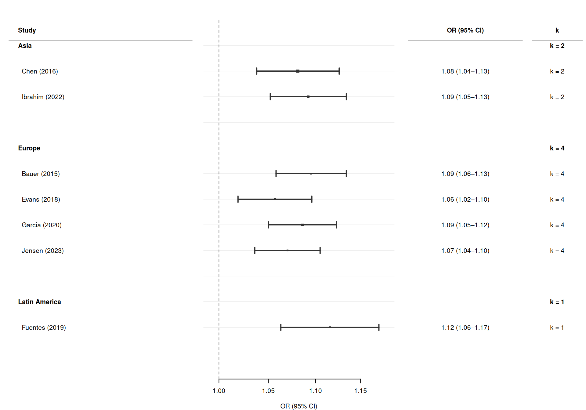
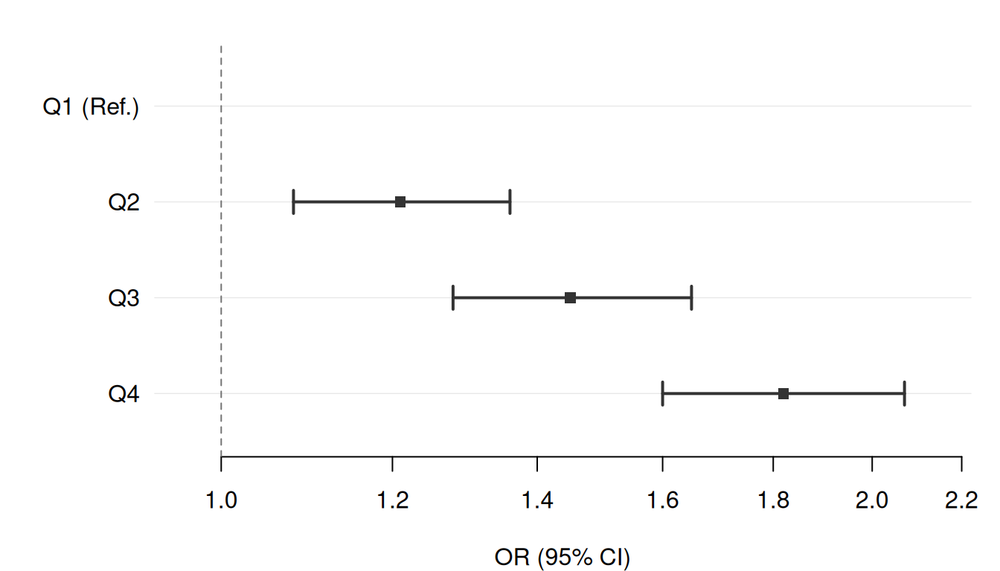
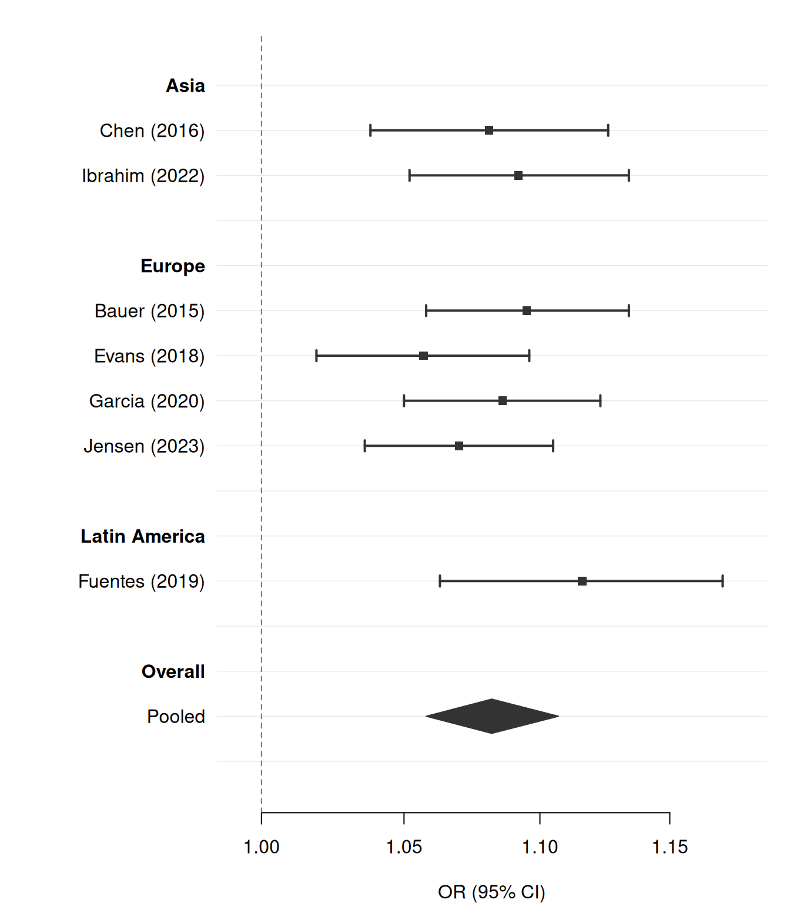
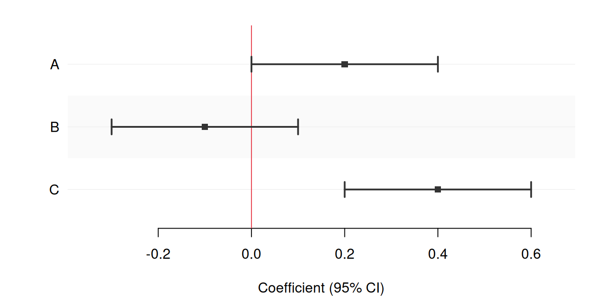

meta <- data.frame(
study = c(
"Chen (2016)", "Ibrahim (2022)",
"Bauer (2015)", "Evans (2018)", "Garcia (2020)", "Jensen (2023)",
"Fuentes (2019)"
),
region = c(
"Asia", "Asia",
"Europe", "Europe", "Europe", "Europe",
"Latin America"
),
or = c(1.081, 1.092, 1.095, 1.057, 1.086, 1.070, 1.116),
lower = c(1.038, 1.052, 1.058, 1.019, 1.050, 1.036, 1.063),
upper = c(1.126, 1.134, 1.134, 1.096, 1.123, 1.105, 1.171),
weight = c(2065, 1736, 816, 1041, 1479, 918, 567),
is_sum = c(FALSE, FALSE, FALSE, FALSE, FALSE, FALSE, FALSE),
or_text = sprintf("%.2f (%.2f\u2013%.2f)",
c(1.081, 1.092, 1.095, 1.057, 1.086, 1.070, 1.116),
c(1.038, 1.052, 1.058, 1.019, 1.050, 1.036, 1.063),
c(1.126, 1.134, 1.134, 1.096, 1.123, 1.105, 1.171))
)
meta
#> study region or lower upper weight is_sum or_text
#> 1 Chen (2016) Asia 1.081 1.038 1.126 2065 FALSE 1.08 (1.04–1.13)
#> 2 Ibrahim (2022) Asia 1.092 1.052 1.134 1736 FALSE 1.09 (1.05–1.13)
#> 3 Bauer (2015) Europe 1.095 1.058 1.134 816 FALSE 1.09 (1.06–1.13)
#> 4 Evans (2018) Europe 1.057 1.019 1.096 1041 FALSE 1.06 (1.02–1.10)
#> 5 Garcia (2020) Europe 1.086 1.050 1.123 1479 FALSE 1.09 (1.05–1.12)
#> 6 Jensen (2023) Europe 1.070 1.036 1.105 918 FALSE 1.07 (1.04–1.10)
#> 7 Fuentes (2019) Latin America 1.116 1.063 1.171 567 FALSE 1.12 (1.06–1.17)How forrest works
This vignette walks through the internals of forrest() step by step, using concrete data at each stage so you can see exactly what gets built before anything is drawn.
Design principles
forrest follows three principles:
One function, all use cases.
forrest()covers regression tables, meta-analyses, subgroup analyses, dose-response patterns, and multi-model comparisons through a uniform column-name-based interface.Data and structure are separate. Users supply tidy data (one row = one estimate). Visual structure — section headers, indentation, spacers — is derived from grouping columns via
section/subsection, not from manually inserted NA rows in the data.Base graphics with a single dependency. All drawing uses base R
graphicsfunctions. The only external dependency is tinyplot, used solely to initialise the plot region.
Source files
| File | Purpose |
|---|---|
R/forrest.R |
Exported forrest() — validation, section expansion, drawing pipeline |
R/save.R |
Exported save_forrest() — device dispatch for PDF/PNG/SVG/TIFF |
R/utils.R |
Internal helpers: build_sections(), compute_dodge_groups(), group_colors(), group_shapes(), check_col(), %||% |
R/draw.R |
Internal drawing helpers: draw_diamond(), draw_text_panel() |
R/theme.R |
Theme infrastructure: .theme_defaults, .themes, resolve_theme() |
Starting data
We will use a small but representative data set throughout. Six studies are grouped into three geographic regions, and each region has a pooled estimate.
Without any structural arguments, all seven rows are drawn as plain study rows:
forrest(
meta,
estimate = "or",
lower = "lower",
upper = "upper",
label = "study",
weight = "weight",
log_scale = TRUE,
ref_line = 1,
xlab = "OR (95% CI)"
)
Step 1b — Section expansion via build_sections()
build_sections() is the function that converts the tidy data into the display-ready expanded frame. Calling it directly shows what forrest() sees before drawing.
# build_sections() is an internal function; access via :::
expanded <- forrest:::build_sections(
df = meta,
estimate = "or",
lower = "lower",
upper = "upper",
label = "study",
is_summary = "is_sum",
weight = "weight",
section = "region",
subsection = NULL,
section_indent = TRUE,
section_spacer = TRUE,
cols = "or_text",
section_cols = NULL
)The result is a list with four elements. $df is the expanded data frame:
expanded$df[, c("study", "region", "or", "is_sum", "or_text")]
#> study region or is_sum or_text
#> 1 Asia <NA> NA FALSE
#> 2 Chen (2016) Asia 1.081 FALSE 1.08 (1.04–1.13)
#> 3 Ibrahim (2022) Asia 1.092 FALSE 1.09 (1.05–1.13)
#> 4 <NA> NA FALSE
#> 5 Europe <NA> NA FALSE
#> 6 Bauer (2015) Europe 1.095 FALSE 1.09 (1.06–1.13)
#> 7 Evans (2018) Europe 1.057 FALSE 1.06 (1.02–1.10)
#> 8 Garcia (2020) Europe 1.086 FALSE 1.09 (1.05–1.12)
#> 9 Jensen (2023) Europe 1.070 FALSE 1.07 (1.04–1.10)
#> 10 <NA> NA FALSE
#> 11 Latin America <NA> NA FALSE
#> 12 Fuentes (2019) Latin America 1.116 FALSE 1.12 (1.06–1.17)
#> 13 <NA> NA FALSEThe three flag vectors identify which rows are structural:
data.frame(
study = expanded$df$study,
is_section_header = expanded$is_section_header,
is_subsection_hdr = expanded$is_subsection_header,
is_spacer = expanded$is_spacer
)
#> study is_section_header is_subsection_hdr is_spacer
#> 1 Asia TRUE FALSE FALSE
#> 2 Chen (2016) FALSE FALSE FALSE
#> 3 Ibrahim (2022) FALSE FALSE FALSE
#> 4 FALSE FALSE TRUE
#> 5 Europe TRUE FALSE FALSE
#> 6 Bauer (2015) FALSE FALSE FALSE
#> 7 Evans (2018) FALSE FALSE FALSE
#> 8 Garcia (2020) FALSE FALSE FALSE
#> 9 Jensen (2023) FALSE FALSE FALSE
#> 10 FALSE FALSE TRUE
#> 11 Latin America TRUE FALSE FALSE
#> 12 Fuentes (2019) FALSE FALSE FALSE
#> 13 FALSE FALSE TRUEKey observations:
- Row 1 (
"Asia") and row 5 ("Europe") and row 11 ("Latin America") are section header rows —is_section_header = TRUE,or = NA. - Data rows within each section are indented by two leading spaces.
- The blank spacer rows (
study = "") follow each section. or_textis""for all structural rows.
Passing section = "region" to forrest() triggers this expansion automatically:
forrest(
meta,
estimate = "or",
lower = "lower",
upper = "upper",
label = "study",
section = "region",
weight = "weight",
log_scale = TRUE,
ref_line = 1,
xlab = "OR (95% CI)"
)
Subsection expansion
With both section and subsection, build_sections() inserts two levels of headers. Here each region contains studies from different design types.
meta2 <- data.frame(
region = c("Europe", "Europe", "Europe", "Europe", "Asia", "Asia"),
design = c("Cohort", "Cohort", "Case-control", "Case-control",
"Cohort", "Case-control"),
study = c("Bauer (2015)", "Evans (2018)",
"Garcia (2020)", "Jensen (2023)",
"Chen (2016)", "Ibrahim (2022)"),
or = c(1.095, 1.057, 1.086, 1.070, 1.081, 1.092),
lower = c(1.058, 1.019, 1.050, 1.036, 1.038, 1.052),
upper = c(1.134, 1.096, 1.123, 1.105, 1.126, 1.134)
)exp2 <- forrest:::build_sections(
df = meta2,
estimate = "or",
lower = "lower",
upper = "upper",
label = "study",
is_summary = NULL,
weight = NULL,
section = "region",
subsection = "design",
section_indent = TRUE,
section_spacer = TRUE
)
data.frame(
study = exp2$df$study,
is_section_header = exp2$is_section_header,
is_subsection_header = exp2$is_subsection_header,
is_spacer = exp2$is_spacer
)
#> study is_section_header is_subsection_header is_spacer
#> 1 Europe TRUE FALSE FALSE
#> 2 Cohort FALSE TRUE FALSE
#> 3 Bauer (2015) FALSE FALSE FALSE
#> 4 Evans (2018) FALSE FALSE FALSE
#> 5 Case-control FALSE TRUE FALSE
#> 6 Garcia (2020) FALSE FALSE FALSE
#> 7 Jensen (2023) FALSE FALSE FALSE
#> 8 FALSE FALSE TRUE
#> 9 Asia TRUE FALSE FALSE
#> 10 Cohort FALSE TRUE FALSE
#> 11 Chen (2016) FALSE FALSE FALSE
#> 12 Case-control FALSE TRUE FALSE
#> 13 Ibrahim (2022) FALSE FALSE FALSE
#> 14 FALSE FALSE TRUEforrest(
meta2,
estimate = "or",
lower = "lower",
upper = "upper",
label = "study",
section = "region",
subsection = "design",
log_scale = TRUE,
ref_line = 1,
xlab = "OR (95% CI)"
)
Step 3 — Row type classification
After section expansion, forrest() classifies every row into one of four types. Using the first expanded frame:
df <- expanded$df
est <- as.numeric(df$or)
is_sum <- as.logical(df$is_sum)
is_struct <- expanded$is_section_header |
expanded$is_subsection_header |
expanded$is_spacer
is_ref <- is.na(est) & !is_sum & !is_struct
is_bold <- (expanded$is_section_header |
expanded$is_subsection_header) &
nchar(trimws(df$study)) > 0L
data.frame(
study = df$study,
is_sum = is_sum,
is_struct = is_struct,
is_ref = is_ref,
is_bold = is_bold,
CI_drawn = !is_sum & !is_struct & !is_ref & !is.na(est)
)
#> study is_sum is_struct is_ref is_bold CI_drawn
#> 1 Asia FALSE TRUE FALSE TRUE FALSE
#> 2 Chen (2016) FALSE FALSE FALSE FALSE TRUE
#> 3 Ibrahim (2022) FALSE FALSE FALSE FALSE TRUE
#> 4 FALSE TRUE FALSE FALSE FALSE
#> 5 Europe FALSE TRUE FALSE TRUE FALSE
#> 6 Bauer (2015) FALSE FALSE FALSE FALSE TRUE
#> 7 Evans (2018) FALSE FALSE FALSE FALSE TRUE
#> 8 Garcia (2020) FALSE FALSE FALSE FALSE TRUE
#> 9 Jensen (2023) FALSE FALSE FALSE FALSE TRUE
#> 10 FALSE TRUE FALSE FALSE FALSE
#> 11 Latin America FALSE TRUE FALSE TRUE FALSE
#> 12 Fuentes (2019) FALSE FALSE FALSE FALSE TRUE
#> 13 FALSE TRUE FALSE FALSE FALSEThe is_ref column would be TRUE for a reference-category row (user-supplied NA estimate that is not a structural row). For this data there are none.
Step 8 — Dodge layout
compute_dodge_groups() assigns visual group IDs. Consecutive rows with the same label form one group; structural rows are always singletons.
For a non-dodged layout, each row maps to one y slot:
lbl <- as.character(expanded$df$study)
group_ids <- forrest:::compute_dodge_groups(lbl, is_struct)
n_vis <- max(group_ids)
# y slot for each row (top = n_vis, bottom = 1)
row_y <- (n_vis + 1L) - group_ids
data.frame(study = lbl, group_id = group_ids, y = row_y)
#> study group_id y
#> 1 Asia 1 13
#> 2 Chen (2016) 2 12
#> 3 Ibrahim (2022) 3 11
#> 4 4 10
#> 5 Europe 5 9
#> 6 Bauer (2015) 6 8
#> 7 Evans (2018) 7 7
#> 8 Garcia (2020) 8 6
#> 9 Jensen (2023) 9 5
#> 10 10 4
#> 11 Latin America 11 3
#> 12 Fuentes (2019) 12 2
#> 13 13 1For a dodged layout with two series per label, consecutive rows sharing a label form one group and are spread around the group centre:
dodge_ex <- data.frame(
label = rep(c("Asia", "Europe"), each = 2),
method = rep(c("Cohort", "Case-control"), 2),
or = c(1.08, 1.05, 1.09, 1.07),
lower = c(1.04, 1.01, 1.05, 1.03),
upper = c(1.13, 1.09, 1.14, 1.11)
)lbl2 <- as.character(dodge_ex$label)
grp2 <- forrest:::compute_dodge_groups(lbl2, rep(FALSE, nrow(dodge_ex)))
dodge_amt <- 0.25
n_vis2 <- max(grp2)
grp_cy <- (n_vis2 + 1L) - seq_len(n_vis2)
row_y2 <- numeric(nrow(dodge_ex))
for (g in seq_len(n_vis2)) {
idx <- which(grp2 == g)
k <- length(idx)
offsets <- seq(-(k - 1L) / 2, (k - 1L) / 2, length.out = k) * dodge_amt
row_y2[idx] <- grp_cy[g] + offsets
}
data.frame(
label = lbl2,
method = dodge_ex$method,
group_id = grp2,
y = row_y2
)
#> label method group_id y
#> 1 Asia Cohort 1 1.875
#> 2 Asia Case-control 1 2.125
#> 3 Europe Cohort 2 0.875
#> 4 Europe Case-control 2 1.125The two “Asia” rows are offset symmetrically around y = 2 (the group centre), and the two “Europe” rows around y = 1:
forrest(
dodge_ex,
estimate = "or",
lower = "lower",
upper = "upper",
label = "label",
group = "method",
dodge = TRUE,
log_scale = TRUE,
ref_line = 1,
xlab = "OR (95% CI)"
)
Colour assignment
group_colors() maps unique levels to the Okabe-Ito palette (skipping index 1, which is near-white):
forrest:::group_colors(c("Asia", "Europe", "Latin America"))
#> Asia Europe Latin America
#> "#E69F00" "#56B4E9" "#009E73"When group is supplied, each row’s colour comes from this map:
grp <- c("Asia", "Asia", "Europe", "Europe", "Latin America")
col_map <- forrest:::group_colors(grp)
col_vec <- unname(col_map[grp])
data.frame(grp, colour = col_vec)
#> grp colour
#> 1 Asia #E69F00
#> 2 Asia #E69F00
#> 3 Europe #56B4E9
#> 4 Europe #56B4E9
#> 5 Latin America #009E73Section-level text column annotations
section_cols lets specific cols columns show a section-level value in the header row rather than "". The value comes from the first non-NA entry of the named data column within each section.
meta$k_text <- c("k = 2", "k = 2",
"k = 4", "k = 4", "k = 4", "k = 4",
"k = 1")
exp_sc <- forrest:::build_sections(
df = meta,
estimate = "or",
lower = "lower",
upper = "upper",
label = "study",
is_summary = "is_sum",
weight = "weight",
section = "region",
section_cols = c(k_text = "k_text"),
cols = c("or_text", "k_text"),
section_spacer = FALSE,
section_indent = FALSE
)
exp_sc$df[, c("study", "or_text", "k_text")]
#> study or_text k_text
#> 1 Asia k = 2
#> 2 Chen (2016) 1.08 (1.04–1.13) k = 2
#> 3 Ibrahim (2022) 1.09 (1.05–1.13) k = 2
#> 4 Europe k = 4
#> 5 Bauer (2015) 1.09 (1.06–1.13) k = 4
#> 6 Evans (2018) 1.06 (1.02–1.10) k = 4
#> 7 Garcia (2020) 1.09 (1.05–1.12) k = 4
#> 8 Jensen (2023) 1.07 (1.04–1.10) k = 4
#> 9 Latin America k = 1
#> 10 Fuentes (2019) 1.12 (1.06–1.17) k = 1Header rows have "" in or_text (a row-level column) and the section value in k_text (declared in section_cols). Data rows keep their original values.
forrest(
meta,
estimate = "or",
lower = "lower",
upper = "upper",
label = "study",
section = "region",
section_cols = c("k" = "k_text"),
weight = "weight",
log_scale = TRUE,
ref_line = 1,
header = "Study",
cols = c("OR (95% CI)" = "or_text", "k" = "k_text"),
widths = c(3.5, 3.5, 2.2, 1.0),
xlab = "OR (95% CI)"
)
Reference-category rows
A row where estimate = NA and which is not auto-inserted by build_sections() is a reference category. It produces no CI or point, its label is rendered in regular (non-bold) font, and ref_label = TRUE appends " (Ref.)" automatically.
dose <- data.frame(
quartile = c("Q1", "Q2", "Q3", "Q4"),
or = c(NA, 1.21, 1.45, 1.82),
lower = c(NA, 1.08, 1.28, 1.60),
upper = c(NA, 1.36, 1.65, 2.07)
)
dose
#> quartile or lower upper
#> 1 Q1 NA NA NA
#> 2 Q2 1.21 1.08 1.36
#> 3 Q3 1.45 1.28 1.65
#> 4 Q4 1.82 1.60 2.07With ref_label = TRUE, the Q1 row’s label gets " (Ref.)" appended and no CI is drawn:
forrest(
dose,
estimate = "or",
lower = "lower",
upper = "upper",
label = "quartile",
ref_label = TRUE,
log_scale = TRUE,
ref_line = 1,
xlab = "OR (95% CI)"
)
Summary (diamond) rows
Rows with is_summary = TRUE are drawn as filled diamonds by draw_diamond(). The diamond’s left and right tips are at lo[i] and hi[i] (the CI bounds), its horizontal centre is at est[i], and its half-height is 0.38 * cex. The diamond is clipped to xlim if the CI extends beyond the axis.
with_pool <- rbind(
meta[, c("study", "region", "or", "lower", "upper", "is_sum")],
data.frame(
study = "Pooled", region = "Overall",
or = 1.082, lower = 1.058, upper = 1.107,
is_sum = TRUE
)
)forrest(
with_pool,
estimate = "or",
lower = "lower",
upper = "upper",
label = "study",
section = "region",
is_summary = "is_sum",
log_scale = TRUE,
ref_line = 1,
xlab = "OR (95% CI)"
)
Theme system
resolve_theme() merges user overrides with .theme_defaults. All six theme keys and their defaults:
forrest:::.theme_defaults
#> $grid_col
#> [1] "#e8e8e8"
#>
#> $grid_lty
#> [1] 1
#>
#> $grid_lwd
#> [1] 0.7
#>
#> $ref_col
#> [1] "gray45"
#>
#> $ref_lty
#> [1] 2
#>
#> $stripe_col
#> [1] "#f2f2f2"Built-in themes are stored as partial override lists:
forrest:::.themes
#> $default
#> list()
#>
#> $minimal
#> $minimal$grid_col
#> [1] "#f0f0f0"
#>
#> $minimal$grid_lwd
#> [1] 0.5
#>
#> $minimal$ref_col
#> [1] "#777777"
#>
#>
#> $classic
#> $classic$grid_col
#> [1] "lightgray"
#>
#> $classic$grid_lty
#> [1] 3
#>
#> $classic$grid_lwd
#> [1] 0.7
#>
#> $classic$ref_col
#> [1] "black"
#>
#> $classic$ref_lty
#> [1] 1
#>
#> $classic$stripe_col
#> [1] "#efefef"A custom theme overrides only the keys you supply:
dat <- data.frame(
label = c("A", "B", "C"),
estimate = c(0.2, -0.1, 0.4),
lower = c(0.0, -0.3, 0.2),
upper = c(0.4, 0.1, 0.6)
)
forrest(
dat,
estimate = "estimate",
lower = "lower",
upper = "upper",
label = "label",
theme = list(ref_col = "#e63946", ref_lty = 1L,
grid_col = "#eeeeee", stripe_col = "#fafafa"),
stripe = TRUE,
xlab = "Coefficient (95% CI)"
)